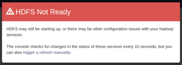
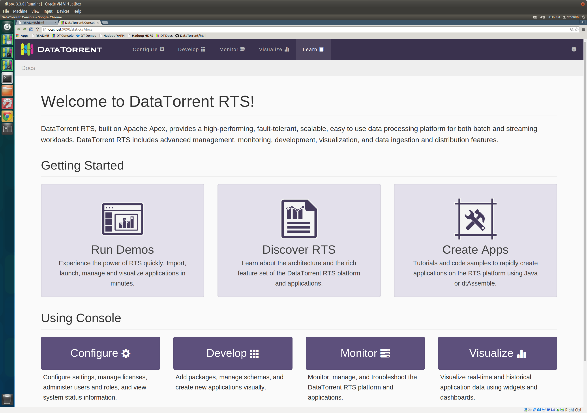

DataTorrent RTS Sandbox
The DataTorrent Sandbox provides a quick and simple way to experience DataTorrent RTS without setting up and managing a complete Hadoop cluster. The Sandbox has the latest version of DataTorrent RTS Enterprise Edition pre-installed along with all the Hadoop services required to launch and run the included demo applications.
Installation
You'll need to install Virtual Box in order to run the sandbox. Oracle VirtualBox is a virtual machine manager (version 4.3 or later) and can be downloaded from VirtualBox.
Download the sandbox from
datatorrent.com/download and import it
into Virtual Box. Then select the newly imported image in the left pane of the
Virtual Box console and click the Start button to
start the sandbox virtual machine. When the machine comes up, you should see a
browser window showing a login dialog which is discussed in the next section.
Accessing Console
When accessing DataTorrent console in the sandbox for the first time, you will be required to log in. Use username dtadmin and password dtadmin. Same credentials are also valid for sandbox system access.

If the various HDFS services are not yet ready, you may see a red warning saying HDFS is not ready like this:

This warning should disappear after a few minutes and the console should appear looking something like this:

If the warning persists after several minutes, check that all required services are running as described in the Service Management section below. Please go to Troubleshooting for detailed instructions.
Inside the DataTorrent RTS Sandbox console can be accessed by opening a browser and visiting http://localhost:9090/
Configuring the Sandbox
The sandbox is configured with 6GB RAM; if your development machine has 16GB or more, you can increase the sandbox RAM to 8GB or more using the VirtualBox console. This will yield better performance and support larger applications.
Additionally, you can change the network adapter from NAT to Bridged Adapter; this will allow you to login to the sandbox from your host as well as transfer files back and forth using ssh and scp on Linux or ssh tools like PuTTY and pscp on Windows.
A simpler option for sharing files is to mount a shared folder from the host on the guest; this may be the only option in some environments where the sandbox is unable to acquire a separate IP address from DHCP. See, for example, http://www.htpcbeginner.com/mount-virtualbox-shared-folder-on-ubuntu-linux/ or http://www.htpcbeginner.com/setup-virtualbox-shared-folders-linux-windows/.
Of course all such configuration must be done when when the sandbox is not running.
Running Demo Applications
Once authenticated, you can continue to Demo Applications section to learn how to import, launch, and run demo applications.
Service Management
The sandbox automatically launches the following services on startup.
- Hadoop HDFS NameNode
- Hadoop HDFS DataNode
- Hadoop YARN ResourceManager
- Hadoop YARN NodeManager
- DataTorrent Gateway
Depending on the host machine capabilities, these may take from several seconds to several minutes to start up. Until Hadoop services are active and ready, it is normal to see the warning message described above.
If the warning persists after several minutes, check the status of each of these following services: you can do that with a shell script like this:
#!/bin/bash
services='hadoop-hdfs-namenode hadoop-hdfs-datanode hadoop-yarn-resourcemanager hadoop-yarn-nodemanager dtgateway'
for s in $services; do
sudo service "$s" status
done
If any of these services are not running, you can start them by running a similar
script but with status replaced by start.
Support
If you experience issues while experimenting with the sandbox, or have any feedback and comments, please let us know, and we will be happy to help! Contact us using one of the methods listed on datatorrent.com/contact page.